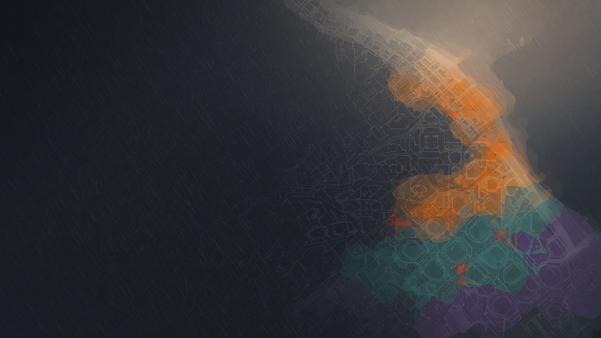

Knowing where the water will go, before the next rain.
The street.
The way home.
About a third of a normal year's rain, in 24 hours.
A storm like this can take lives.
Avoid underpasses and low streets. See which streets near you are flooding: flood-alert.es
Rain, terrain, land use, every source verified before use.
The flow equations that move water across the city.
Could stop us if something was wrong.
Runs the model and serves the map.
Every layer checked against the ground truth.
Simulates the flood, square by square across Barcelona.
A machine-learning model trained on our own dataset gives the margin of error.
Only results within the margin pass. If the number is too low, nothing ships.
Validated data shows up on the map.
The AI built the tool. The water on the map comes from physics, with a model that tells us how far to trust it.
Depth and speed together tell us whether a street is safe or dangerous.
From the hills to the sea, square by square, along the laser map of the city.
Rough ground and buildings hold the flow back. Smooth asphalt lets it run.
After every step we check
If the numbers don't add up, the map can't be trusted.
media/09-qr.png